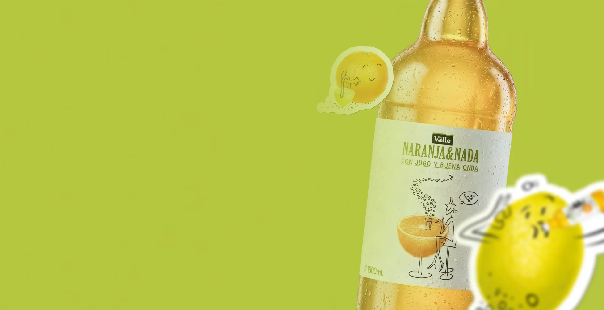
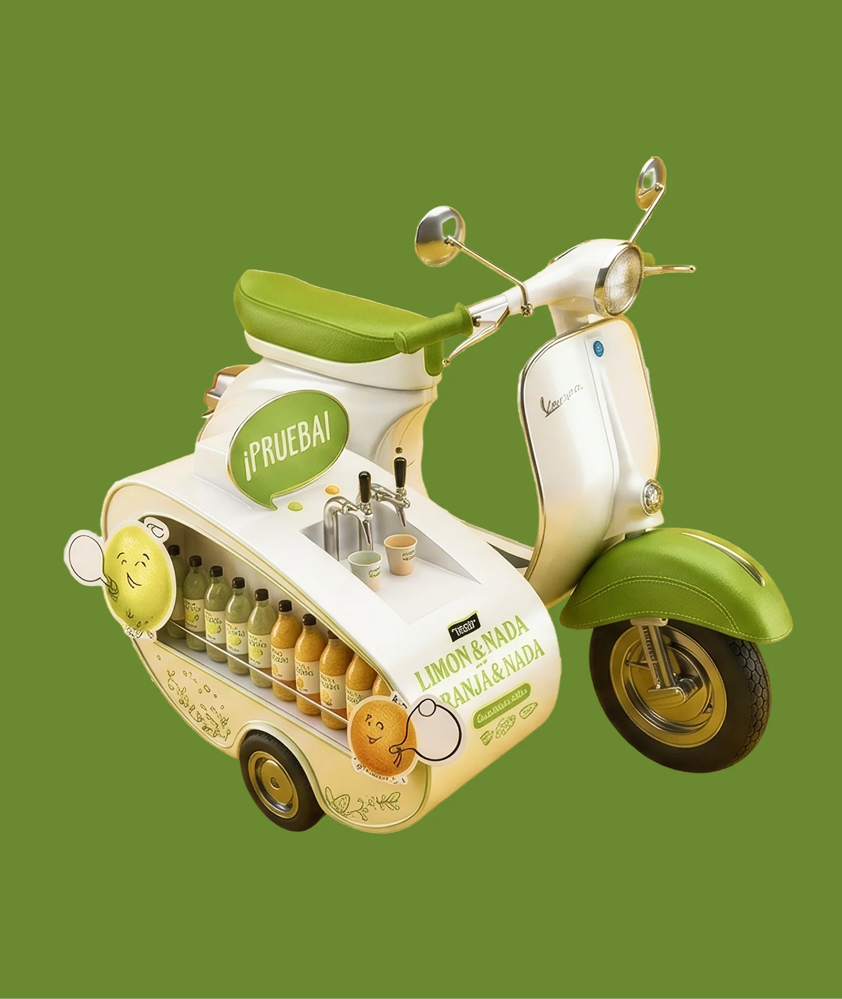
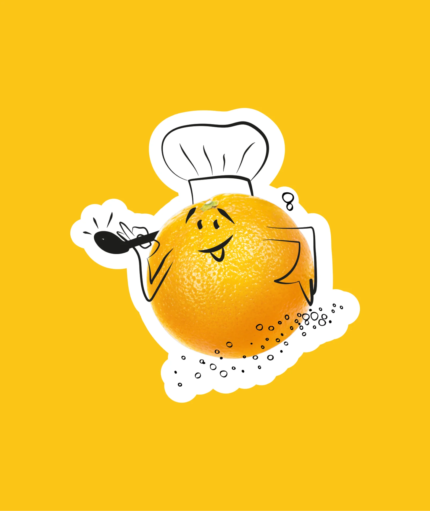
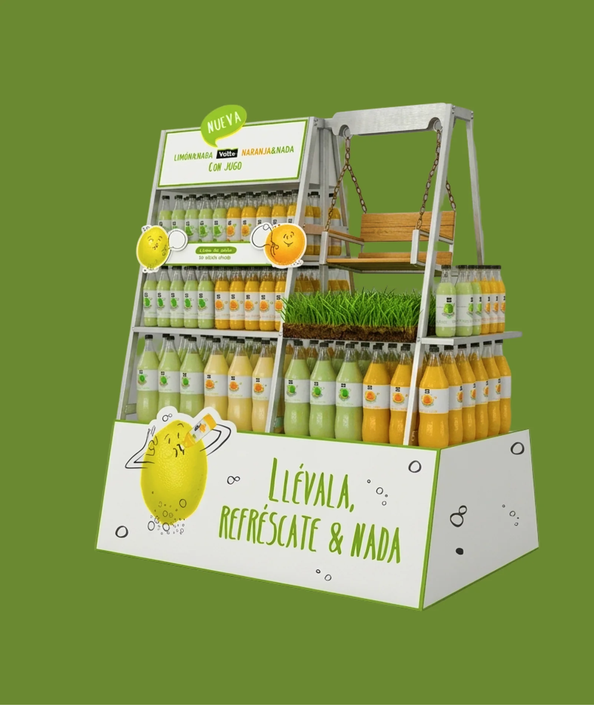
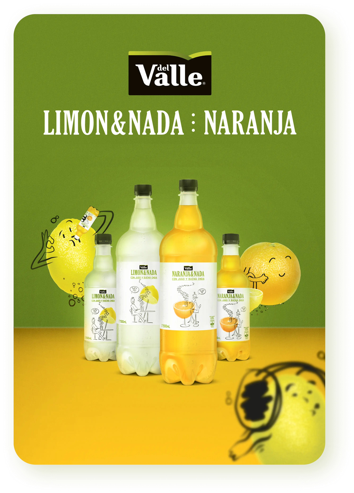
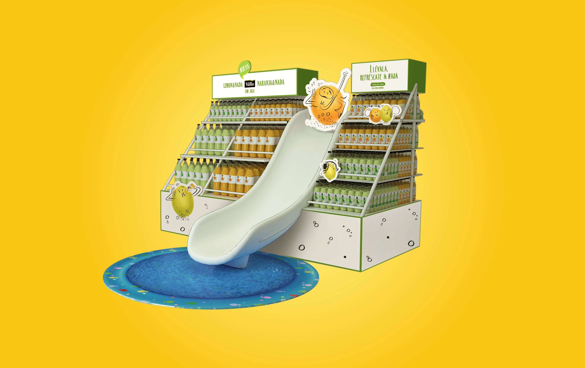

The Bottlexam
Case study · propuesta contra el cáncer de mama para Vital
Dirección de arte

Dirección de arte · Shopper & Trade
Dirección de arte y mundo visual en punto de venta para Limón&Nada y Naranja&Nada, las primeras bebidas gasificadas del mercado local con jugo natural de Del Valle. Partí del material que ya existía (los personajes limón y naranja y las botellas) y armé el universo colorido que los pone a convivir.
Las primeras bebidas gasificadas del mercado local con jugo natural de limón y naranja, respaldadas por los néctares Del Valle. La marca quería verse natural y divertida al mismo tiempo, un territorio difícil de ocupar en el pasillo frío del supermercado.



Los personajes limón y naranja ya venían ilustrados. Con ellos y con las botellas armé el mundo visual completo: paleta, composiciones y un sistema donde el producto es el héroe y los monitos son el acompañante divertido en la góndola.
La dupla aparece en más de ocho poses: chef, música, carrito de compras, exprimiendo jugo. Las fui integrando a cada formato de exhibición y a cada momento de la compra, siempre con la botella al centro.


Compañía GREY Chile
Directora de Arte Erika Pinedo
- Todos los derechos reservados -